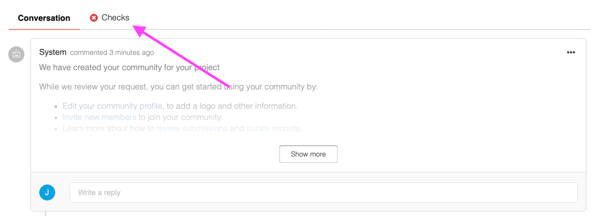
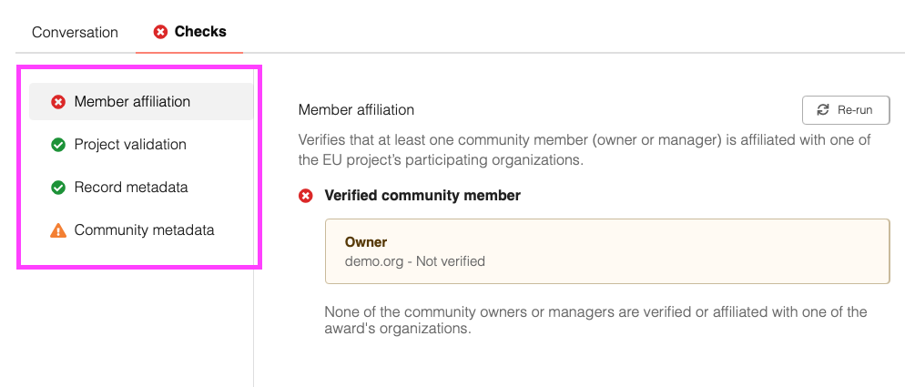
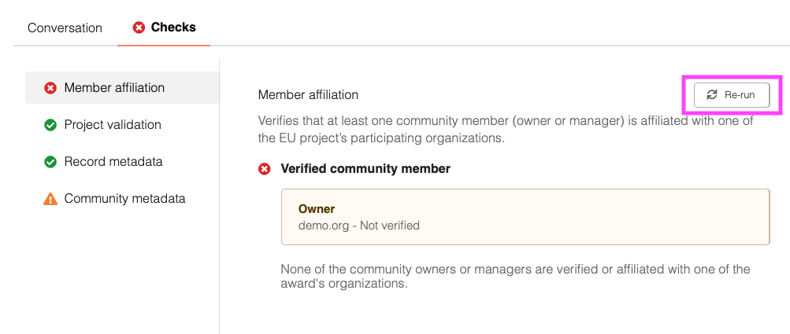
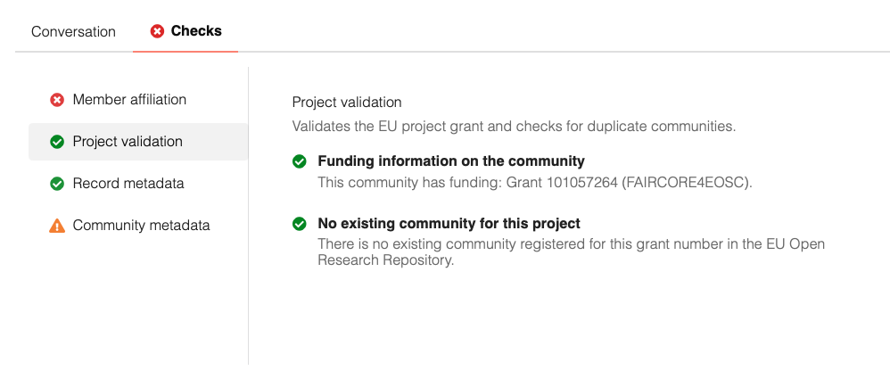
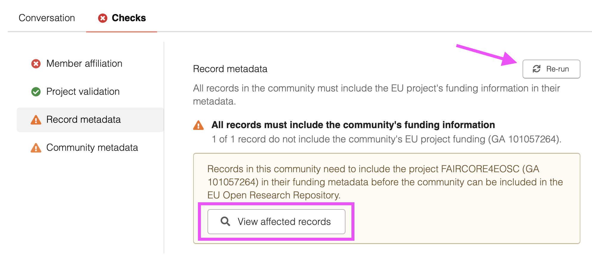
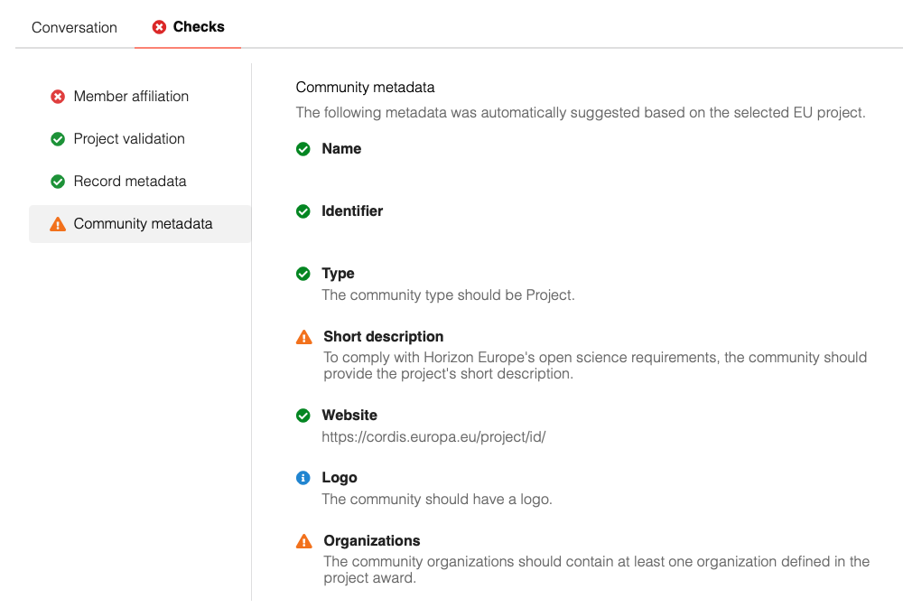

When requesting an EU Project Community, a set of automated curation checks run on the project, providing helpful information for curators and project managers.
The guide covers the following:
1
Navigate to the request page and click on the Checks tab.
Note: the request link is sent to the project manager by email.

2
Use the check tabs to verify different aspects of your request: member affiliation, project validation, record metadata, and community metadata.

3
The tab Member affiliation displays checks on the project members, indicating whether or not they are affiliated with the project's organizations. This verification is based on the member's email address, which should belong to one of the project's organizations.
You can manage the members of your project at any point. Members can also change their email address to use an affiliated email address by editing their profile.
This check can be rerun by clicking the Rerun check button.

4
The Project validation tab verifies that the project has at least one grant, and whether or not there already exists a project in the EU Open Research Repository for the same grant.

5
The tab Record metadata verifies each record that is already part of the project, to check if the records contain the same award as that of the project. This check can only be rerun manually by clicking the Rerun check button (pink arrow).
If there are records that do not match the project's award, you can see a list of them by clicking the View affected records button (pink box).

6
The Community metadata tab shows whether or not the project metadata includes required fields (project name, description, website), and whether the organizations match those listed in the project consortium.
To edit the project metadata, manage the settings of the community.

The recommended checks will warn you in case there's a problem, but you will still be able to submit the request for review.